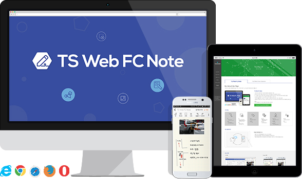
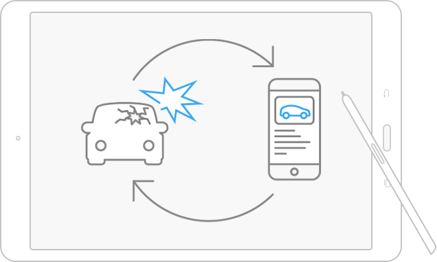
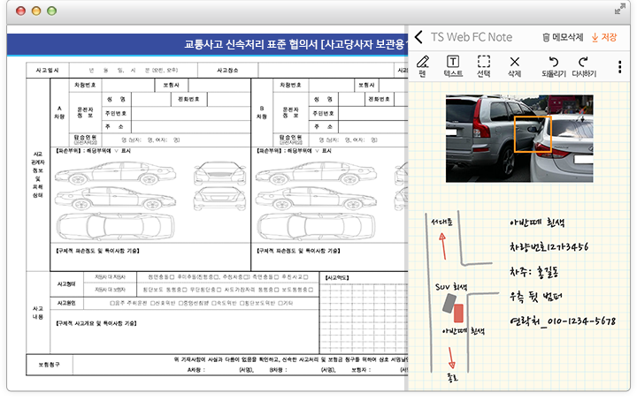
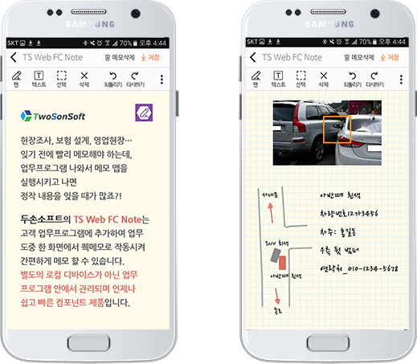

Non-ActiveX, Non-Plugin
어떠한 프로그램도 설치할 필요 없는 HTML5 기반의 100% Pure Web 필기 메모 컴포넌트 제품입니다.

TS Web FC Note
100% Pure Web기반의 Touch Drawing Component Tool
ActiveX나 Plug-in 별도 설치 없이 HTML5 기반의 웹브라우저 환경에서 사용 가능
PC, Tablet, Phone 다양한 디바이스 환경에서도 동일하게 사용 가능 / One Source Muti Platform 제품
Component 제품으로 기존 시스템에 추가하여 복합기능 구현 가능
작성한 업무를 개별 Local 관리가 아닌 중앙 시스템에서 체계적인 관리 가능 / 메모 중앙화
현장에서 ODS(Out Door Sales), mSFA (mobile Sales Force Automation) 실행 중 포스트잇 메모처럼 사용 가능
- 사용환경: HTML5 지원 웹브라우저
IE10이상, 크롬, 사파리, 파이어폭스, 오페라 등
주요특징
-
- 펜
-
- - 필기 쓰기 기능
- - 색상/투명도/굵기 설정
- 텍스트
-
- - 텍스트 입력 기능
- - 텍스트 색상/굵기 설정
-
- 선택
-
- - Object 선택,이동,회전,크기변경 (Up/Dwon)기능
- - 전체/복수선택 : Drag
- 삭제
-
- - Object 삭제 기능
- - 선택된 Object 삭제
-
- 되돌리기
-
- - 이전 작업으로 되돌리기
- 다시하기
-
- - 다시 실행
-
- 도형 삽입
-
- - 원형/사각형 도형 삽입
- - 색상/투명도 설정
- 이미지 삽입
-
- - 저장 이미지 불러오기
-
- 배경지 선택
-
- - 메모 배경지 선택
- 파일 변환
-
- - 이미지/PDF로 내보내기
- 배경 그리드
-
- - 그리드 배경 표시/닫기
-
- 메모삭제
-
- - 전체 Object 일괄 삭제
- 저장
-
- - 메모 저장
주요 활용분야

- 자동차 보험 현장 조사
-
- 자동차 사고시 현장에 출동하여 사고조사 및 처리업무
- 긴박한 현장 정보들을 사진이미지와 함께 빠르게 필기 메모 가능
- 작성된 메모들은 업무프로그램안에서 관리되어 필요시 언제 어느기기에서나 열람/사용 가능
주요 화면
PC 화면
Mobile 화면
